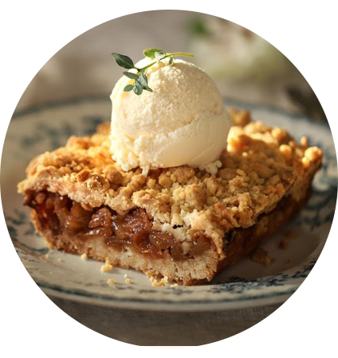
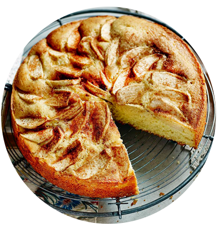
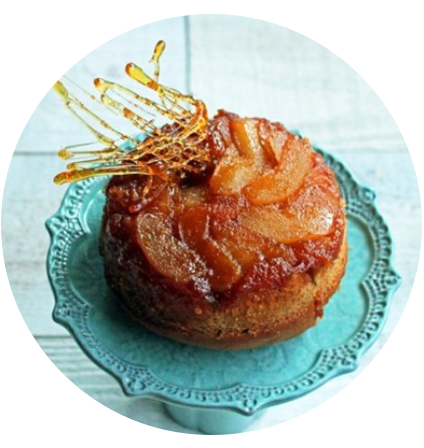
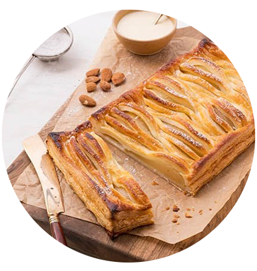
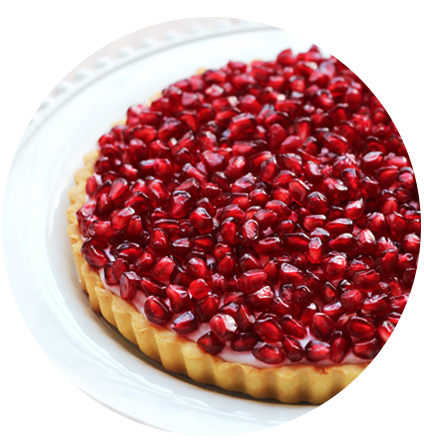
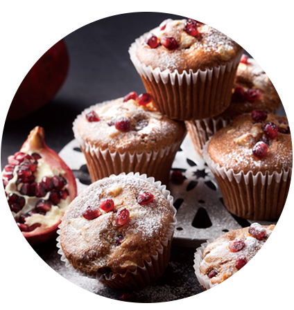

봄
여름
가을
늦가을
Fall menu
사과,배,석류
아삭 달콤 사과
사과는 10월~12월까지만 나옵니다.
사과 크럼블 파이
재료 사과, 사과 잼, 박력분,. 아몬드 가루, 버터, 설탕 아이스크림과 함께 먹으면 달달함의 끝판왕 크럼블이 와작와작 씹히는 것이 특징이에요


사과 시나몬 케잌
재료 사과, 버터, 시나몬,설탕,소금,계란,생크림,우유 사과의 향긋함이 빵에서 베어나오는 케잌 시나몬이 사과와 빵을 잘 조합시켜줘요
과즙 톡톡 시원 배
배는 9월~11월까지만 나옵니다.
배 머핀
재료 배 절임, 설탕, 버터, 박력분, 우유, 달걀 절인 배가 쫀득쫀득함을 살려주는 식감이 좋은 머핀


배 다흐뚜와
재료 배, 커스터드 크림, 아몬드 가루, 박력분, 설탕, 버터 배와 커스터드 크림이 바삭하고 얇은 페스츄리 안에 고소하고 달달한것이 특징
톡 튀는 빨간 보석 석류!
석류는 9월~12월까지만 나옵니다.
석류 타르트
재료 석류, 버터, 중력분, 계란 , 설탕, 크림치즈 석류알갱이들이 타르트에 가득 올라와 있습니다. 석류즙과 함께만든 크림치즈는 산미가 풍부한것이 특징


석류 마카다미아 머핀
재료 석류, 버터, 마카다미아, 박력분,설탕,바닐라 익스트렉 마카다미아의 고소하고 씹히는 단단한 식감과 상큼한 석류가 촉촉하게 빵에 녹아있습니다.